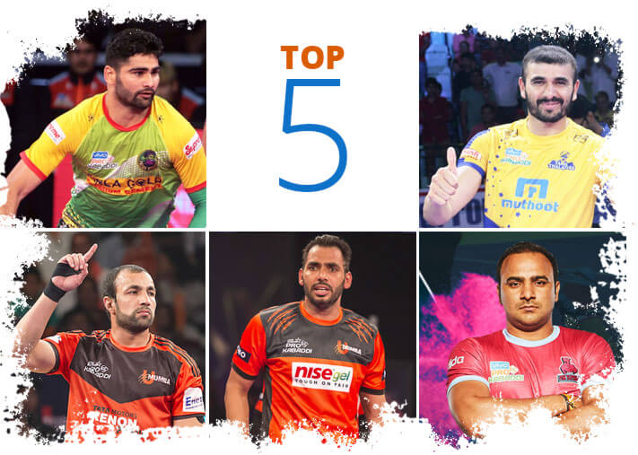
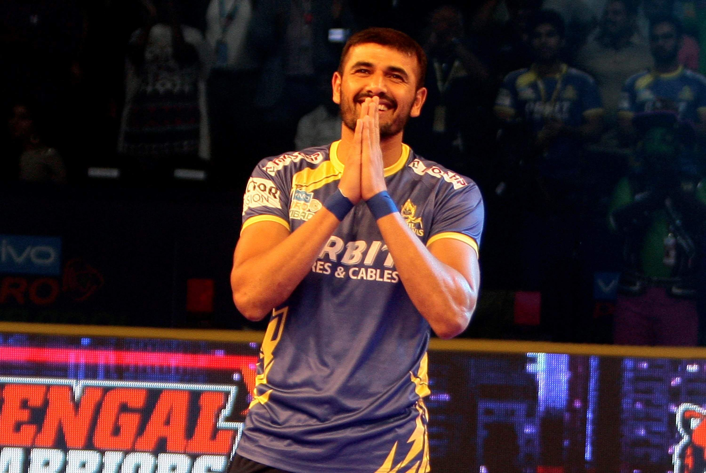
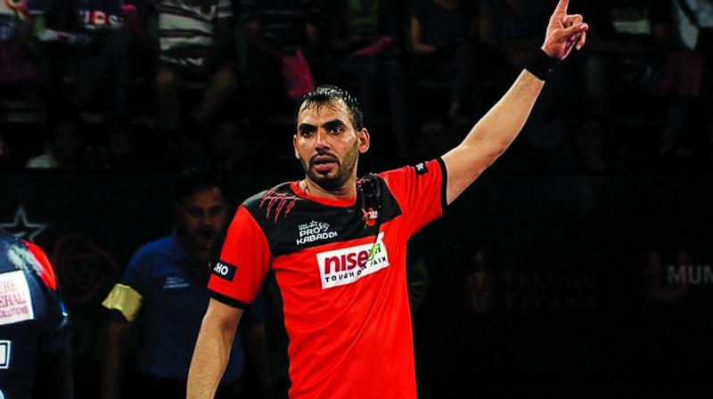
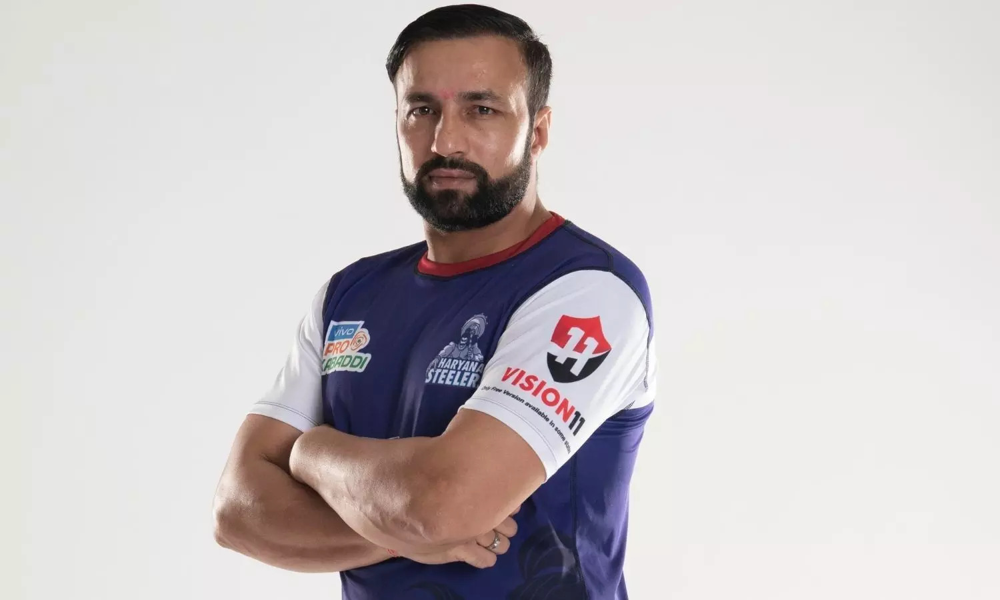
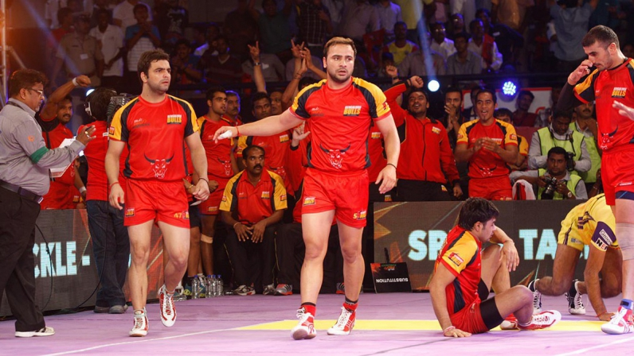

Kabaddi PLayers
-Ved Asawa

India's Top Kabaddi Players
-
Pardeep Narwal
Birthdate: 16 February 1996
-
Click here to Know More
-
Ajay Thakur
Birthdate: 1 May 1986 -
Click here to Know More
-
Anup Kumar
Birthdate: 20 November 1983 -
Click here to Know More
-
Rakesh Kumar
Birthdate: 15 April 1983 -
Click here to Know More
-
Manjeet Chhillar
Birthdate: 18 August 1987 -
Click here to Know More
Pardeep Narwal is an Indian kabaddi player who currently plays for the UP Yoddha in VIVO Pro Kabaddi League and the Indian National Kabaddi team. He led the Patna Pirates to three straight VIVO Pro Kabaddi titles and holds a multitude of the league's raiding records.
Ajay Thakur is an Indian professional Kabaddi player and the former captain of the Indian National Kabaddi Team. He was part of the national teams which won 2016 Kabaddi World Cup and gold medal at 2014 Asian Games. He was awarded the Padma Shri and Arjuna Award in 2019.
Anup Kumar is an Indian former professional Kabaddi player and Kabaddi Coach of PKL Team Puneri Paltan. He was a member of the India national kabaddi team that won Asian gold medals in 2010 and 2014, one South Asian gold medal in 2016 and the 2016 Kabaddi World Cup.
Rakesh Kumar is a former Indian professional Kabaddi player and Coach of Harayana Steelers. He was the vice-captain of the Indian team that won the gold medal at the 2007 World Cup at Panvel, India. In 2011, in recognition of his achievements in the sport, he was awarded the Arjuna Award by the Government of India.
Manjeet Chhillar is an Indian professional kabaddi player, who currently represents Dabang Delhi in the Pro Kabaddi League. He was a member of the India national kabaddi team and won an Asian games gold medal in 2014 and Asian Indoor Games in 2014 in Incheon